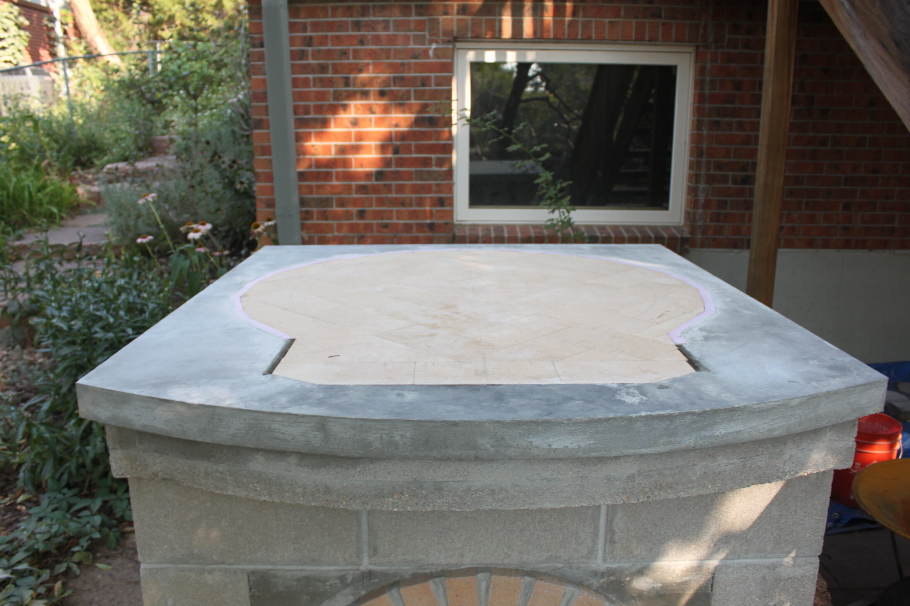
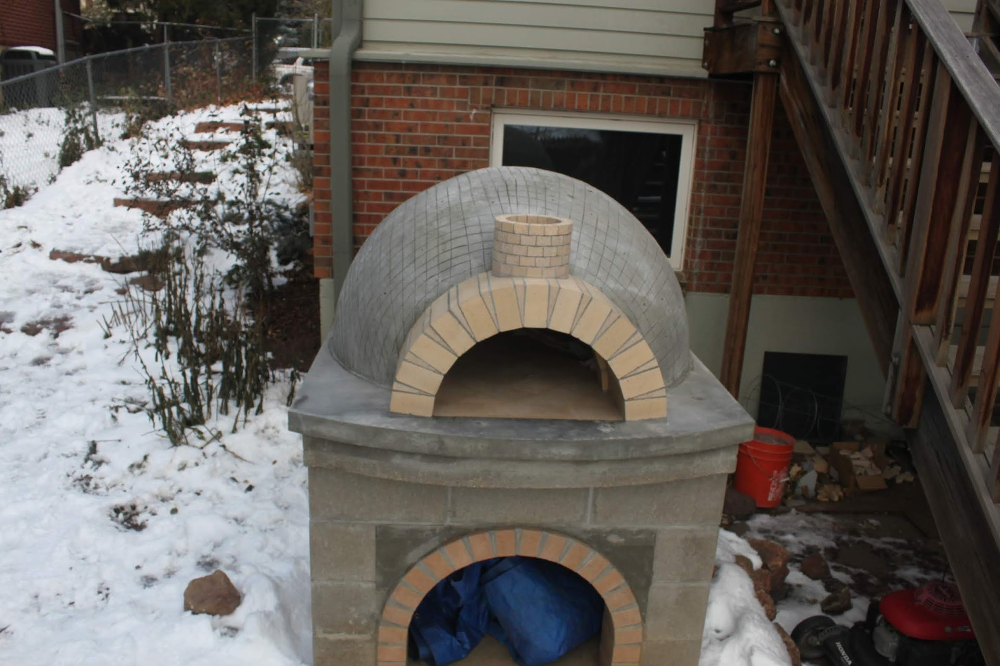
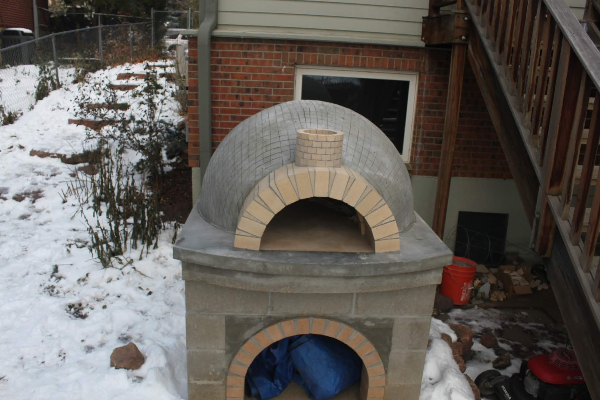
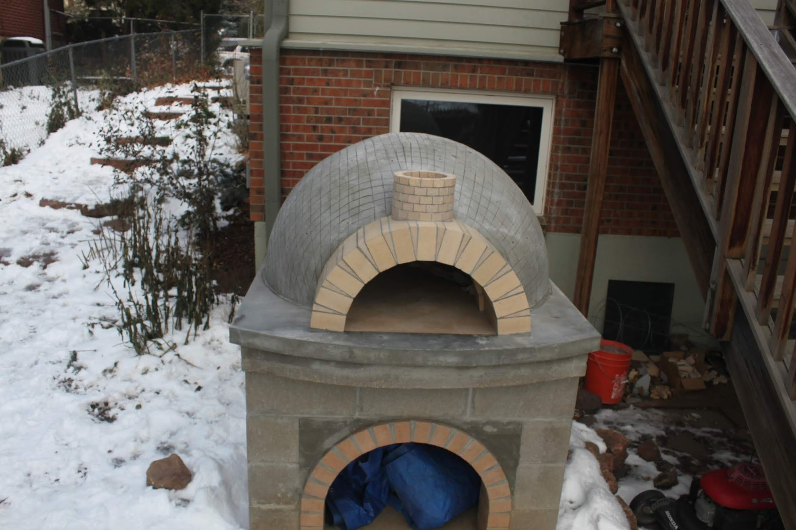

 


The completed pizza oven during one of the first times we used it. It can easily reach over 1000 degrees F inside, which means cooking a pizza in under 90 seconds.
The portion of my mom's garden that was given up to make the oven.
We dug out and made a form for the foundation concrete slab. Rebar was used for reinforcement.
The completed slab. Not the best finish, but you never see it anyways.
The base of the oven was made out of cinderblocks.
We built an arch, while mostly just ornamental it allows for wood storage under the oven.
The mostly completed base structure.
We had to lay 3 layers of concrete for the tabletop. The second layer encases some high temperature insulation seen here, and the top layer encases the actual brick floor.
The entire dome is constructed out of high-temperature fire bricks. It took a lot of iteration to get the floor nice and flat.
The tabletop finally finished! It took a ton of work to get to this point, and the hardest part of building the actual oven lies ahead.
We built some forms and a radial arm to help with laying the bricks for the dome.
The first two layers done. We had to cut each of those trapezoidal brick individually, which was super time consuming.
Three layers in. You can see the radial arm coming in handy.
The mostly completed dome.
Another view from above.
In order to plug the very top of the dome we had to make this funky looking keystone.
We built a secondary arch, with a chimney on top.
All our work in making the dome look pretty wouldn't pay off as we needed to cover the whole oven with thick insulation, then stucco.
The first coat of stucco applied.
About this project
It took considerable convincing, but after my freshman year of high school my dad agreed to help me build a pizza oven in our backyard. Having never done any masonry before, this project was in completely new territory. Only being able to work consistently over summers, it took us over 4 years to complete, but the end result is a very high performing oven capable of cooking pizzas super quickly.
To date this is the largest scale project I've taken on. I learned a lot about masonry, but more importantly a ton about design and thinking through assembly from the very beginning.